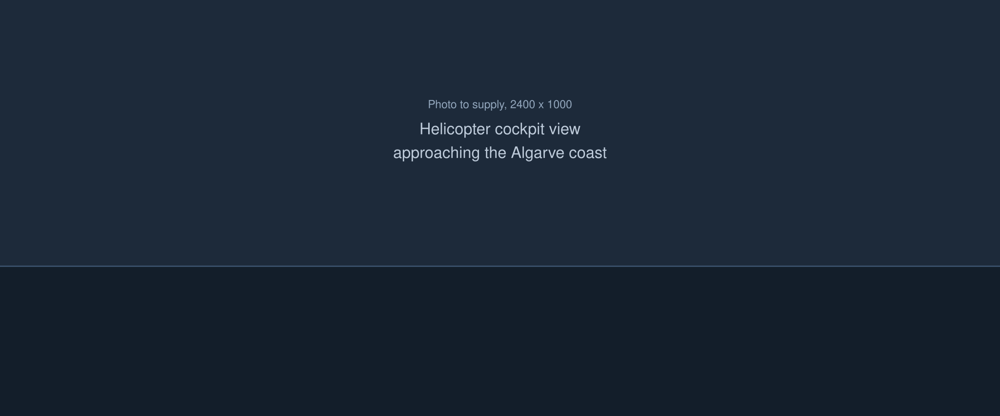
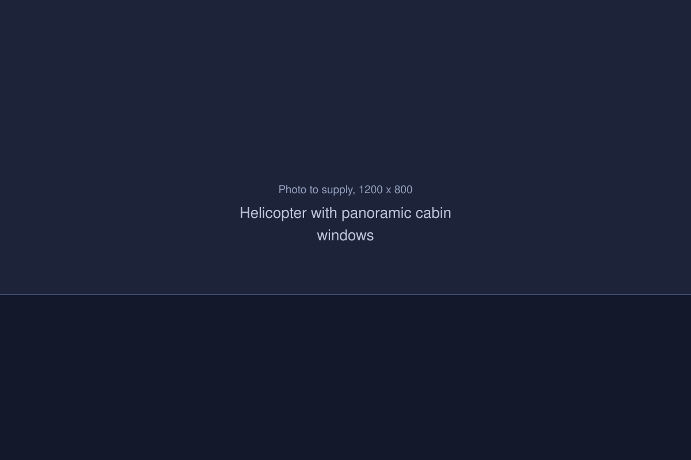
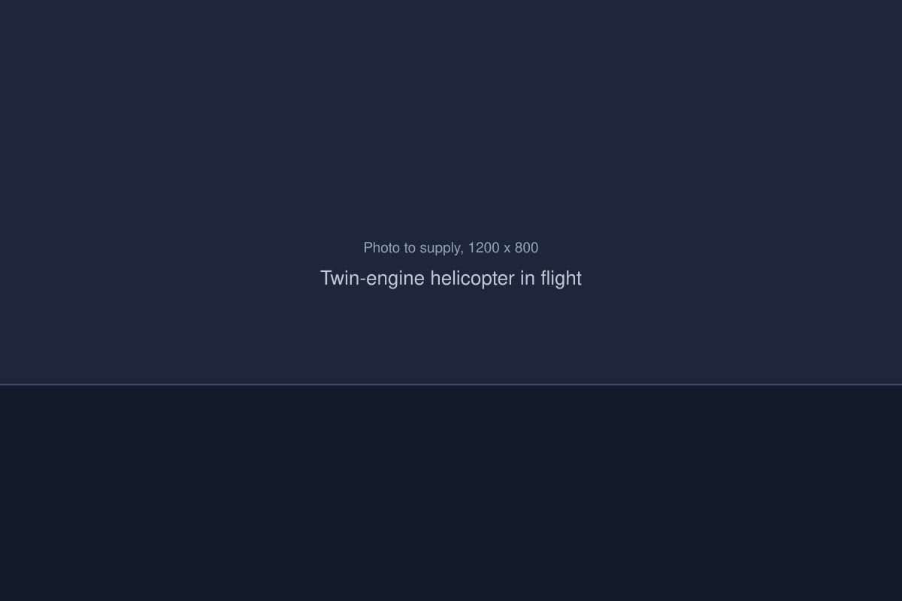

Voos de helicóptero
A linha mais curta entre dois pontos em Portugal, com aterragem perto do seu destino.
Para quem é
- Viajantes que seguem de um jato ou voo comercial para um resort ou quinta
- Casais e organizadores que querem uma chegada ou partida pelo ar
- Grupos de golfe que jogam campos em duas regiões na mesma estadia
- Hóspedes que querem ver a costa, o Douro ou Lisboa de cima
O que está incluído
- Helicóptero, piloto e combustível
- Verificação do local de aterragem e autorizações
- Briefing de segurança antes do embarque
- Acompanhamento da meteorologia, com alternativa por estrada se o voo não puder realizar-se
- Bagagem enviada por estrada quando excede o limite da cabine
Três formas de o usar
- Transfers
- Do aeroporto ao resort, da cidade à quinta, de uma região à seguinte. Planeamos em função do seu voo ou reunião.
- Voos panorâmicos
- Lisboa e o Tejo, a costa da Arrábida, os socalcos do Douro. Percursos a partir de 20 minutos.
- Eventos e casamentos
- Chegadas, partidas e vaivém de convidados, combinados com o espaço e sincronizados com o programa.
A frota
Tipos de helicóptero apresentados como exemplo. A aeronave e o operador são confirmados no orçamento.
-
Helicóptero monomotor
- Lugares
- Até 5
- Alcance
- Cerca de 600 km
- Ideal para
- Transfers curtos e aterragens em locais apertados
-

Helicóptero de cabine panorâmica
- Lugares
- Até 6
- Alcance
- Cerca de 600 km
- Ideal para
- Voos panorâmicos e grupos familiares
-

Helicóptero bimotor
- Lugares
- Até 6
- Alcance
- Cerca de 600 km
- Ideal para
- Voos sobre água, cidades e à noite
Perguntas frequentes
Onde pode aterrar um helicóptero?
Em aeroportos, heliportos e em muitos locais privados, com o consentimento do proprietário e a autorização necessária. Envie-nos a morada e nós verificamos.
O que acontece com mau tempo?
O piloto decide se o voo é seguro. Se não for, alteramos a hora ou passamos para um carro, e paga apenas o que foi utilizado.
Quanta bagagem posso levar?
Normalmente um saco maleável por passageiro. Malas maiores e sacos de golfe seguem por estrada e ficam à sua espera na chegada.
Podem aterrar no local de um casamento?
Muitas vezes, sim. Visitamos ou avaliamos o local, falamos com o espaço e tratamos da autorização. Conte com pelo menos três semanas.
Diga-nos para onde e quando
Respondemos com opções e preço fechado, normalmente em duas horas.